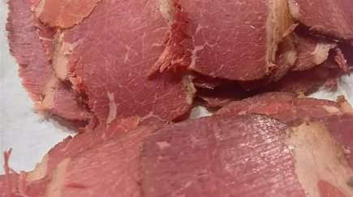

Corned Beef

Beer Brined Corned Beef
Beer Brined Corned Beef is a great dinner for any special occasion.
The beer brining process helps to infuse a distinct flavor from the beer while
not retaining any alcohol flavor when cooked with the recipe listed below.
Ingredients
Brine:
- 3 quarts cold water
- 3 (12 fluid ounce) bottles lager beer
- 2 onions, cut into wide slices
- 1-1/2 cups kosher salt
- 1/2 cup dark brown sugar
- 5 tablespoons curing salt
- 1/4 cup pickling spice
- 2 tablespoons chopped garlic
- 1 (5lb) beef brisket, fat trimmed to a thin layer
- Wood chips
- 2 cups apple juice, or as needed
Braising Liquid:
- 1 (12 fl ounce) bottle lager beer
- 1 onion, cut into large slices
- 2 tablespoons dark brown sugar
- 2 tablespoons pickling spice
- 2 tablespoons chopped garlic
- 1 teaspoon ground black pepper
Steps
- Place water, 3 bottles beer, 2 onions, kosher salt, 1/2 cup brown sugar,
curing salt, 1/4 cup pickling spice, and 2 tablespoons garlic in a very large pot.
Stir well until salts are dissolved. Add beef then stir gently. Use a large bowl or heavy
plate to keep the beef submerged. Cover with plastic wrap and refrigerate, stirring once
a day, for 4 days.
- Soak wood chips in apple juice for 2 hours.
- Remove beef from pot, discarding brine, and rinse well with cold water.
Let beef come to room temperature.
- Preheat the outdoor grill to 150-175 degrees F. Place soaked wood chips in a shallow
aluminum pan on the heat source.
- Place meat directly on the grate and allow to smoke for 2 hours.
- Combine 1 beer, 1 onion, 2 tablespoons brown sugar, 2 tablespoons pickling spice,
2 tablespoons chopped garlic, and black pepper in a large saucepan then bring to boil.
Remove from heat and pour into a large roasting pan. Place beef in braising liquid in the
the roasting pan and cover tightly with aluminum foil.
- Increase the beef until tender, 3 to 4 hours. An instant-read thermometer inserted
into the center should read at least 145 degrees F.
- Remove beef form the roasting pan, discarding braising liquid. Let beef cool until
easily handled.
- Slice beef into very thin slices across the grain